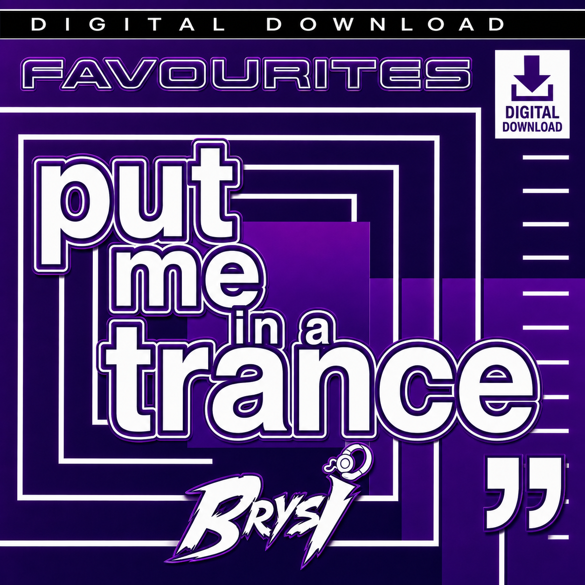
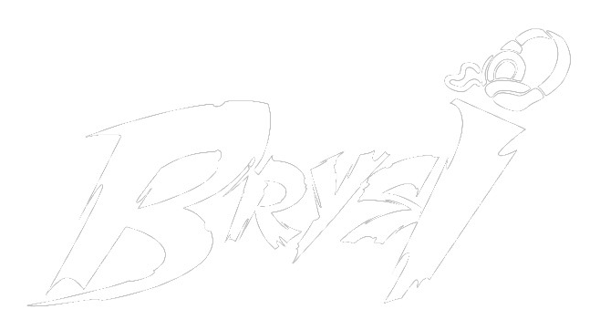
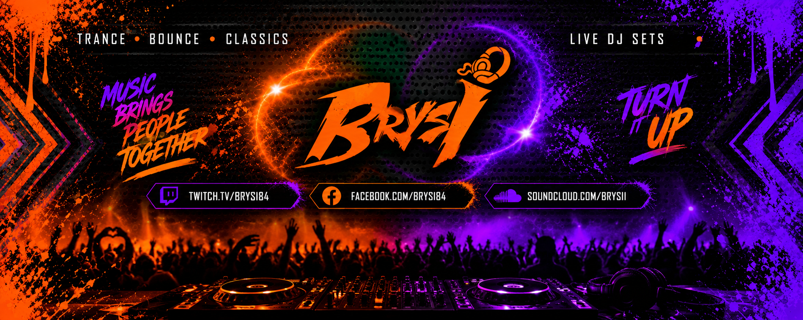
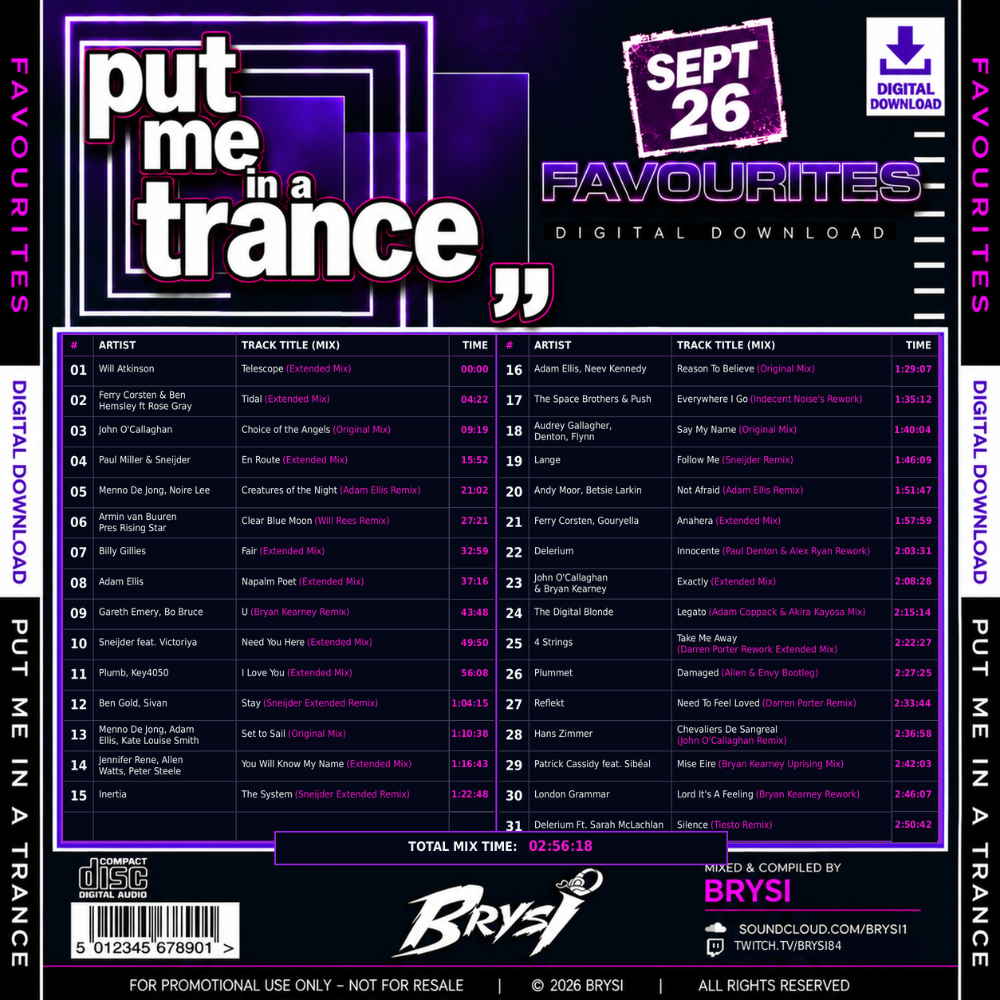

FEATURED COLLECTION
Put Me in a Trance — Favourites
A journey through uplifting melodies and trance anthems.

● WATCH LIVE ↗TRANCE ✦ BOUNCE ✦ CLASSICS
Big melodies. Driving beats. Pure dancefloor energy. Turn it up and lose yourself in the music.
01 / TUNE IN
Catch the next set on Twitch. High energy, huge tunes and good company.

OPEN TWITCH ↗ Live player works on djbrysi.co.uk. If offline, visit Twitch for past broadcasts.02 / PRESS PLAY
Explore Brysi's favourite trance sounds and DJ mixes.

A journey through uplifting melodies and trance anthems.

Browse the artists, remixes and timestamps from the Favourites collection.
VIEW ARTWORK ↗03 / BEHIND THE DECKS
Welcome to the world of Brysi — a place for trance, bounce, classics and the tracks that make a night unforgettable.
From euphoric breakdowns to hands-in-the-air moments, it's all about the music and the people who love it.
JOIN THE NEXT LIVE SET ↗04 / STAY CONNECTED